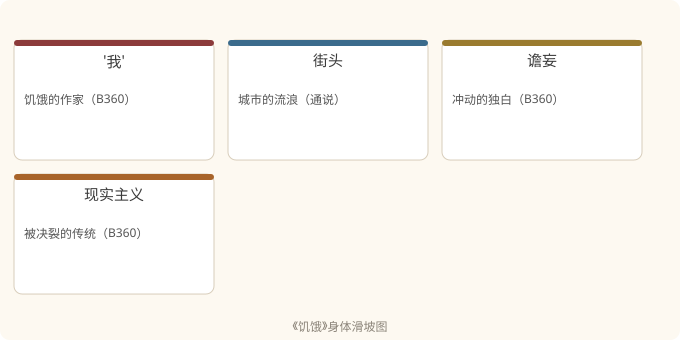

饥饿
一、基本信息
| 作者 | 克努特·汉姆生 |
|---|---|
| 成书/出版 | 1890年（Britannica B360：Sult (Hunger, 1890)——半自传） Knut Hamsun — Encyclopaedia Britannica（百科全书） |
| 国别/地区 | 挪威 |
| 时代 | 近代 · 19世纪80年代末 |
| 体裁 | 长篇小说 |
| 语言 | 挪威语 |

《饥饿》身体滑坡图（主题·结构图）
二、创作背景
Britannica（B360）：'the story of a starving young writer in Norway'——半自传。
Britannica（B360）：'marked a clear departure from the social realism of the typical Norwegian novel of the period'——与当时挪威小说的社会现实主义决裂。
Britannica（B360）：'Its refreshing viewpoint and impulsive, lyrical style had an electrifying effect on European writers.'
三、内容脉络
饥饿中的年轻作家在城市街头流浪：身体与理智的滑坡（B360：story of a starving young writer in Norway；城市名克里斯蒂安尼亚说通说待核）。
冲动而抒情的第一人称独白（B360：impulsive, lyrical style）。
四、主要人物表
| 人物 | 身份 | 说明 |
|---|---|---|
| 无名作家 | '我' | （B360：starving young writer——半自传） |
五、主题与艺术特点
- 饥饿的身体政治（B360）。
- '我'的冲动与自我欺骗（B360：impulsive style 语境）。
- 与社会现实主义的决裂（B360）。
六、影响与评论
- Britannica：'had an electrifying effect on European writers'（B360）。
Knut Hamsun — Encyclopaedia Britannica（百科全书） - Britannica：高尔基、托马斯·曼、辛格'acknowledged him as a master'（B360）。
Knut Hamsun — Encyclopaedia Britannica（百科全书）
七、阅读建议
难点
- 饥饿中的心理谵妄。
- 19世纪90年代奥斯陆（克里斯蒂安尼亚）背景（通说待核）。
- 《饥饿》中译本（人民文学/上海译文等——通说待核）。
- 挪威文原版。
汉姆生首选；后接《大地的成长》。
八、待核实
- 城市名（克里斯蒂安尼亚说）核对（B360未载）。
- 1890年出版（Nielsen & Lydvo说）待核。
- 半自传细节核对（B360口径）。